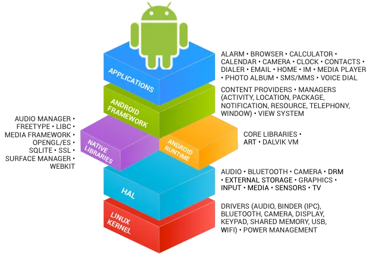
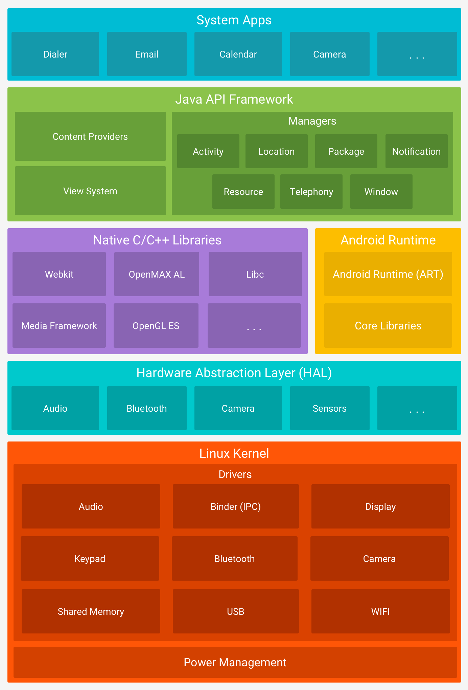
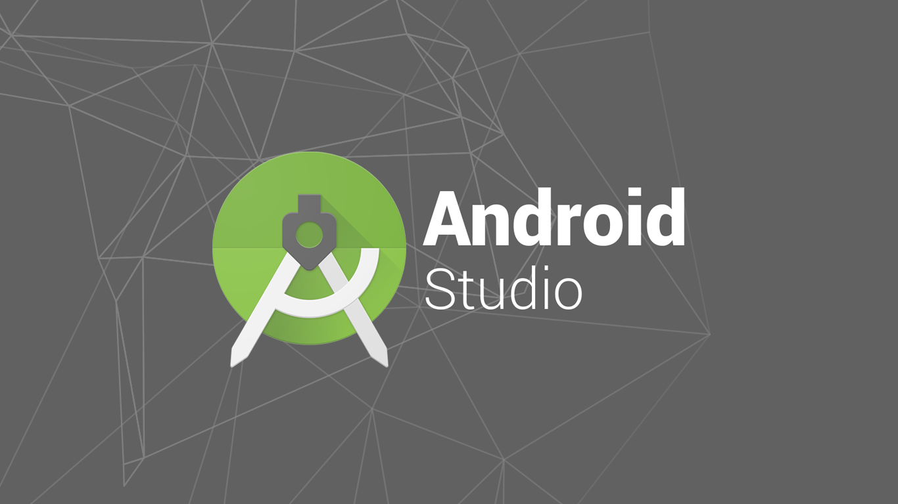
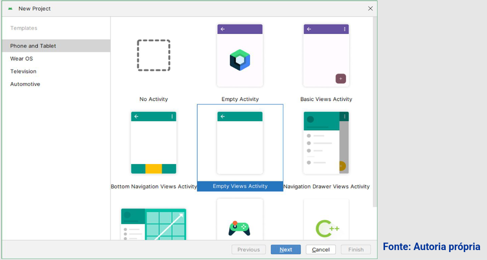
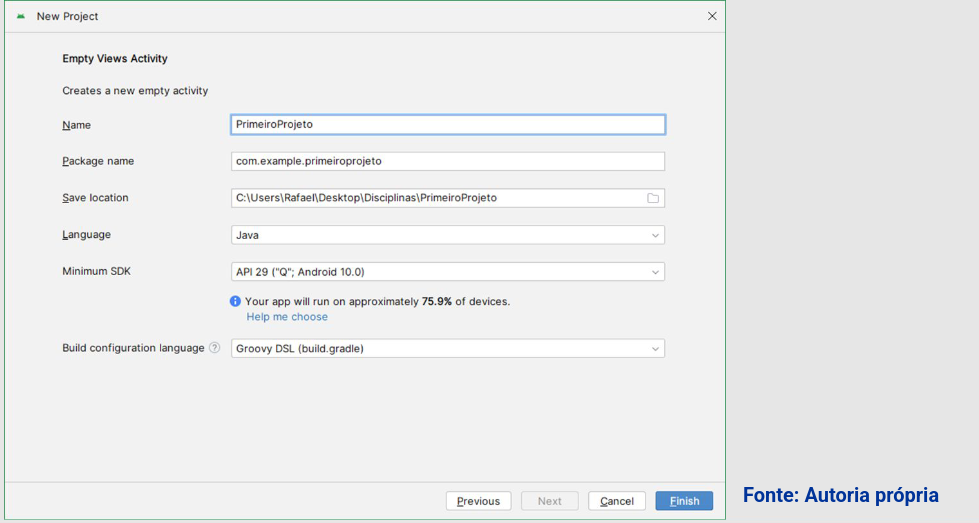
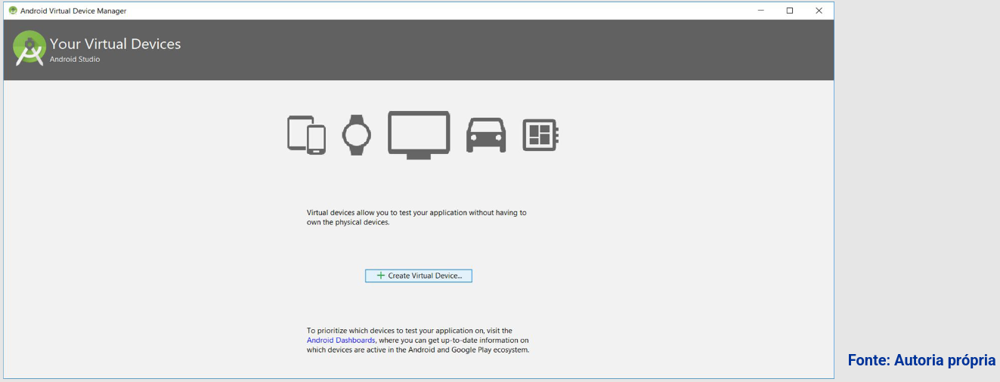
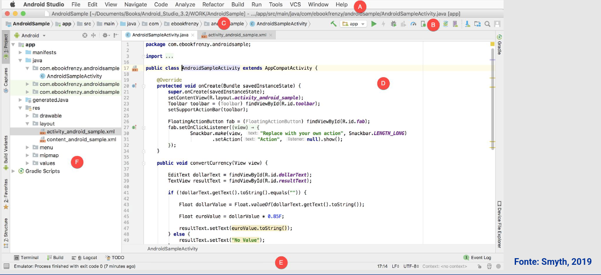

Disciplinas
DESENVOLVIMENTO PARA DISPOSITIVOS MÓVEIS. Concluído
Materiais
[UFMS Digital] Desenvolvimento Dispositivos Móveis - Módulo 1 - Unidade 2 sendProf° ministrante: Dr. Rafael dos Passos Canteri.
Plataforma Android.
- Produto da OHA - Open Handset Alliance.
- OHA:
- Consórcio entre empresas de hardware, software e telecomunicações;
- Criar padrões abertos para telefonia móvel;
- Paridade de privilégios (terceiros e licenciados).
- AOSP - Android Open Source Project.
- S.O. móvel de código aberto.
- Construído sob o Kernel Linux.
- Primeiro smartphone - 2008.
- Segurança:
- Cada app tem um usuário;
- Sandbox;
- Permissões.

Arquitetura Android.
Arquitetura da plataforma Android
Arquitetura da plataforma Android

Android Studio.

Instalação → kali Linux
sudo apt update && sudo apt full-upgrade -y
sudo apt install openjdk-17-jdk -y
sudo dpkg --add-architecture i386
sudo apt update
sudo apt install libncurses6:i386 libstdc++6:i386 zlib1g:i386 mesa-utils libgl1-mesa-glx -y
wget https://redirector.gvt1.com/edgedl/android/studio/ide-zips/2023.2.1.20/android-studio-2023.2.1.20-linux.tar.gz
# Extraia para /opt/ (recomendado para instalações globais)
sudo tar -xzf android-studio-*.tar.gz -C /opt/
sudo chown -R $USER:$USER /opt/android-studio # Permissão de usuário
echo 'export ANDROID_HOME="$HOME/Android/Sdk"' >> ~/.bashrc
echo 'export PATH="$PATH:$ANDROID_HOME/tools:$ANDROID_HOME/platform-tools:/opt/android-studio/bin"' >> ~/.bashrc
source ~/.bashrc
sudo apt install qemu-kvm libvirt-daemon-system virt-manager -y
sudo adduser $USER kvm
sudo systemctl enable --now libvirtd
egrep -c '(vmx|svm)' /proc/cpuinfo # Saída > 0 = sucesso
sudo apt install cpu-checker -y
kvm-ok # Deve mostrar "KVM acceleration can be used"
# Abrir o aplicativo:
/opt/android-studio/bin/studio.sh
# Criar atalho no menu do sistema:
sudo nano /usr/share/applications/android-studio.desktop
#Cole o seguinte conteúdo:
[Desktop Entry]
Version=1.0
Type=Application
Name=Android Studio
Exec=/opt/android-studio/bin/studio.sh
Icon=/opt/android-studio/bin/studio.png
Comment=Android Studio IDE
Categories=Development;IDE;
Terminal=false
Criando projetos.


Emulador (AVD).

Android Studio.

- A – Menu Bar – Contém uma variedade de menus para realizar tarefas dentro do ambiente.
- B – Toolbar – Uma seleção de atalhos para ações realizadas com frequência. Pode ser personalizada clicando com o botão direito.
- C – Navigation Bar – Oferece uma maneira conveniente de navegar pelos arquivos e pastas que constituem o projeto. Clicar em um elemento na barra de navegação abrirá um menu que lista as subpastas e arquivos.
- D – Editor Window – Exibe o conteúdo do arquivo no qual se está trabalhando atualmente. Ao editar código, o editor de código aparecerá. Ao trabalhar em um arquivo de layout da interface do usuário, a ferramenta Editor de Layout aparecerá.
- E – Status Bar – Exibe mensagens informativas sobre o projeto e as atividades do Android Studio.
- F – Project Tool Window – Fornece uma visão geral hierárquica da estrutura do arquivo do projeto, permitindo a navegação para pastas e arquivos específicos.